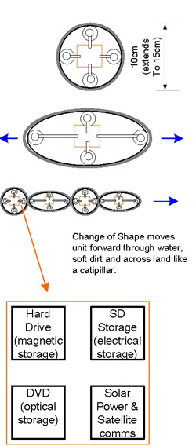

| webdesign | food | virtual | lifecube | about | links | house | gadgets |
A place to discuss gadget ideas, electronic devices, design tips

Multiple small robots containing different types of storage can join together and actively move out of danger. They receive encrpyted backup data streams and can remotely restore data.
- Caterpillar design allows units to move across land and bury/hide in sand or water
- each cell has multiple methods of data storage
- each cell is self contained for redundancy
- solar power charges lithium batteries (or whatever is best at the time)
- data is spliced across multiple caterpillars to avoid a single device giving up information
- all data is redundantly backed up across 5-9 caterpillars (you only need 3 of 15 devices to be working to get data retrieved)
Secure Data Capsules
Each core of the 4-12 stage ‘caterpillar’ holds the data centre protected by a titanium casing. The only way data gets in or out is via encrypted wireless, and even then only every 2nd cell has a wireless connection – each odd cell is isolated and only gets / sends data after a secure request from the 1st cell. This is to stop EMP pulse attacks to destroy all data, or viruses which get through
{kind=link}